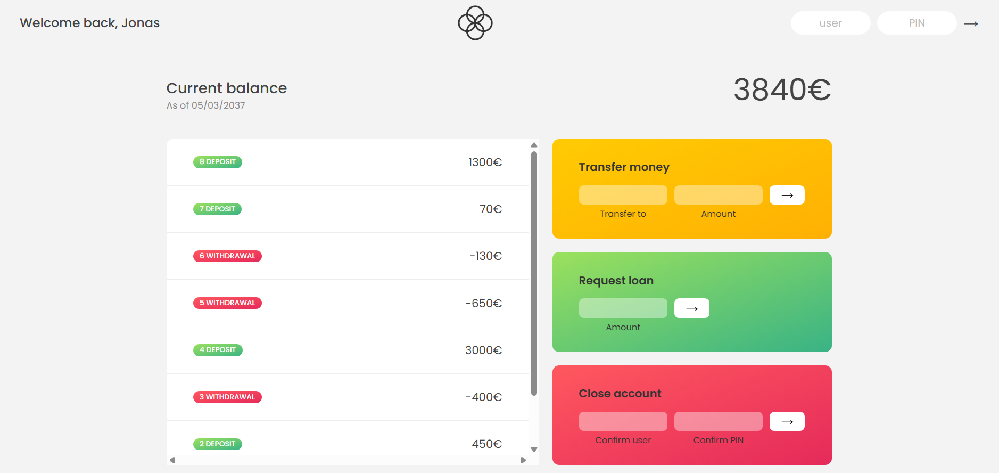
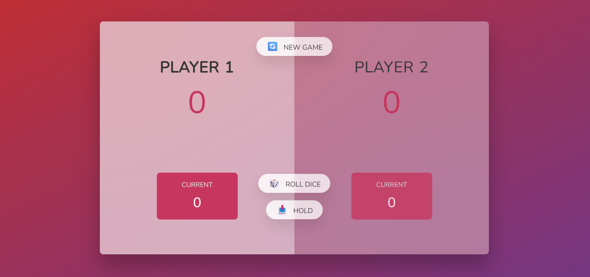
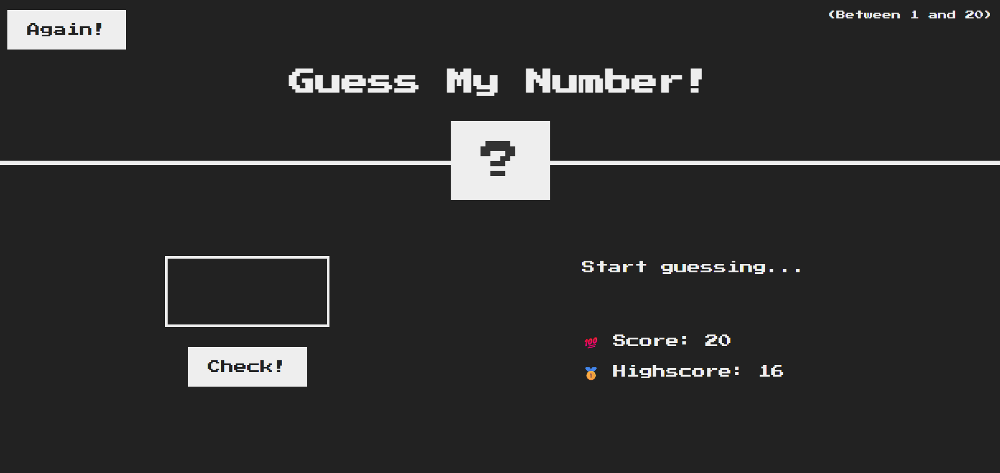
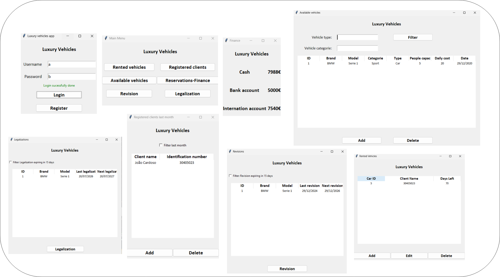
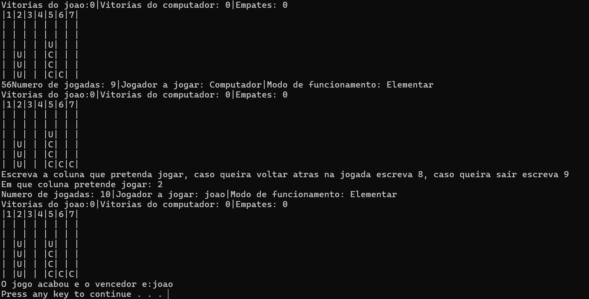

Projects

Bank website
Development of an interactive web banking application as part of a JavaScript course (Udemy, instructor Jonas Schmedtmann). The project involved implementing all the logic in JavaScript, starting from a pre-existing HTML and CSS structure. The application allows users to view their bank statement with transaction history, check the total account balance, and analyze metrics such as deposits, withdrawals, and accumulated interest. Dynamic functionalities were also developed, including transfers between accounts, loan requests, and account deletion, with automatic interface updates, demonstrating fundamental concepts of DOM manipulation, arrays, events, and business logic.

Dice game
Development of an interactive dice-based game as part of the same JavaScript course (Udemy, instructor Jonas Schmedtmann), responsible for implementing all the logic in JavaScript. The game allows two players to accumulate points through successive dice rolls, with the option to “hold” the accumulated value or risk additional rolls. If a roll results in a 1, the player loses the points for that turn and the turn passes to the opponent. The objective is to reach 100 points first. This project helped consolidate fundamental concepts such as DOM manipulation, state management, event handling, and dynamic updating of visual elements, including the use of images.

Guess number game
Development of an interactive number-guessing game as part of the JavaScript course (Udemy, instructor Jonas Schmedtmann), focusing on implementing the logic in JavaScript on a pre-existing HTML and CSS structure. The objective of the game is to guess a secret number within a defined range using the fewest possible attempts. For each guess, the system provides dynamic feedback indicating whether the entered value is higher or lower than the target number. This project helped consolidate concepts such as DOM manipulation, input validation, event handling, conditional logic, and real-time interface updates.

Vehicle rental company interface
Development of a desktop application in Python, using the Tkinter library, aimed at managing a vehicle rental company. The application integrates a local SQL database for storing and managing all information, including users, vehicles, rentals, and financial data. An authentication system with user registration and login was implemented, along with multiple functionalities such as viewing available and rented vehicles, managing clients, analyzing revenue, and identifying vehicles that require maintenance or legal compliance. The system was developed in an integrated manner, ensuring data consistency — for example, rented vehicles are removed from the available list, and the corresponding revenue is automatically reflected in the company’s finances. Filtering mechanisms were also implemented to facilitate navigation and information search, consolidating knowledge in database management and graphical interface development.

Connect four game
Development of a “Connect Four” game in C++ during university, with the option to play between two human players or against the computer. Interaction is text-based, where players specify the column in which they want to place their piece. A complete game logic was implemented, including victory checking, board management, and adjustable difficulty levels, in which the computer increases its strategy to block the opponent’s moves and create opportunities to win. This project helped consolidate skills in structured programming, algorithmic logic, flow control, and basic artificial intelligence simulation.